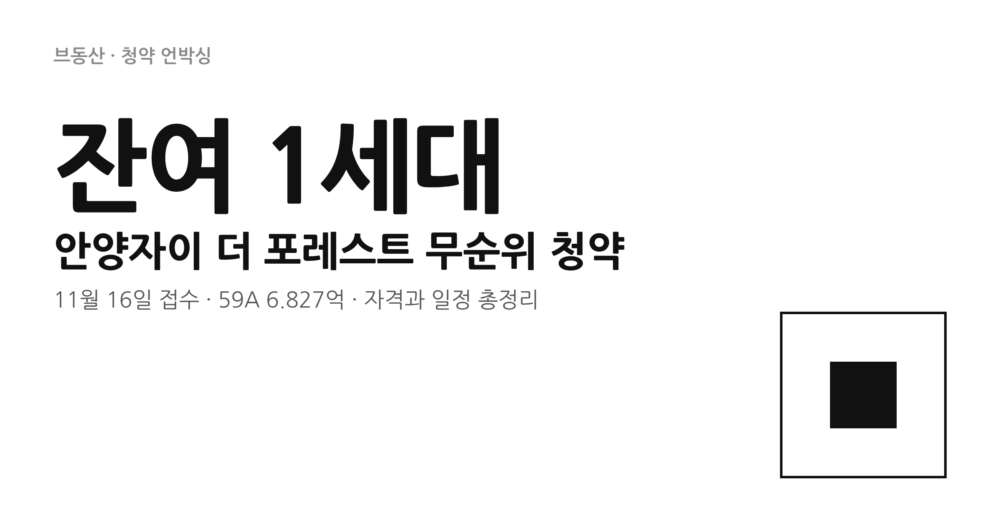
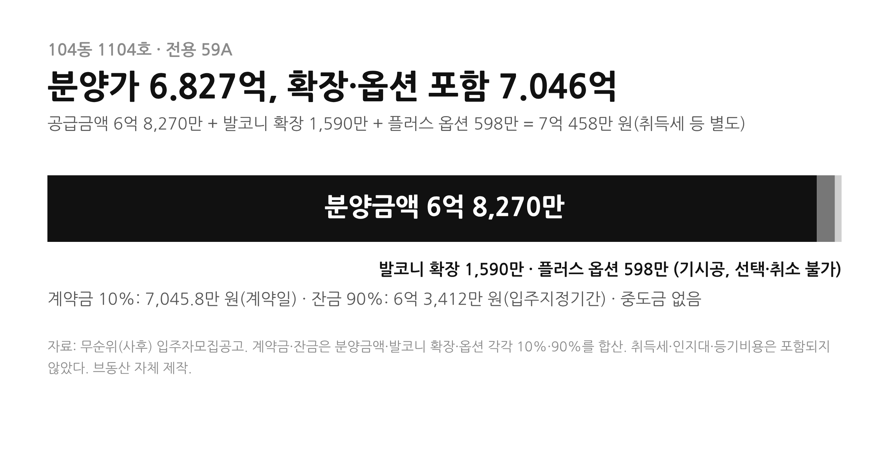
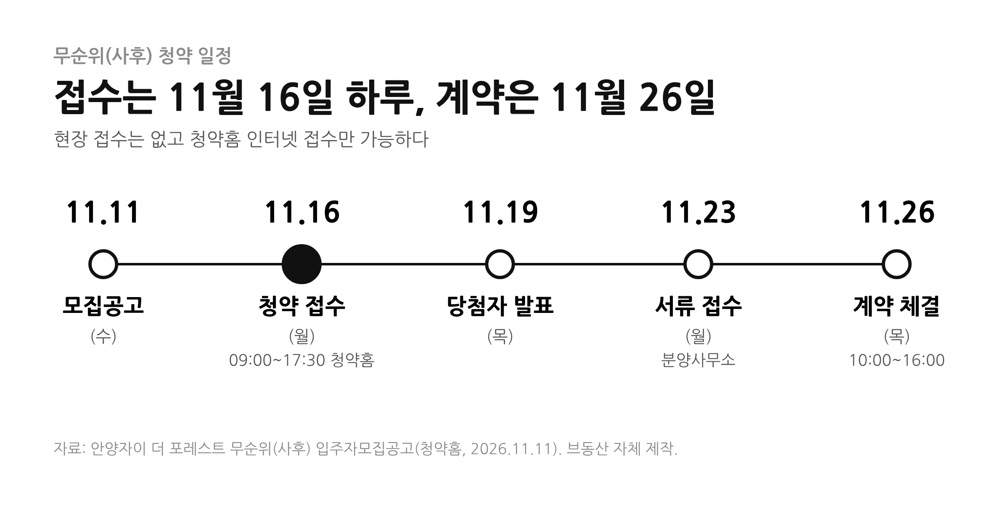
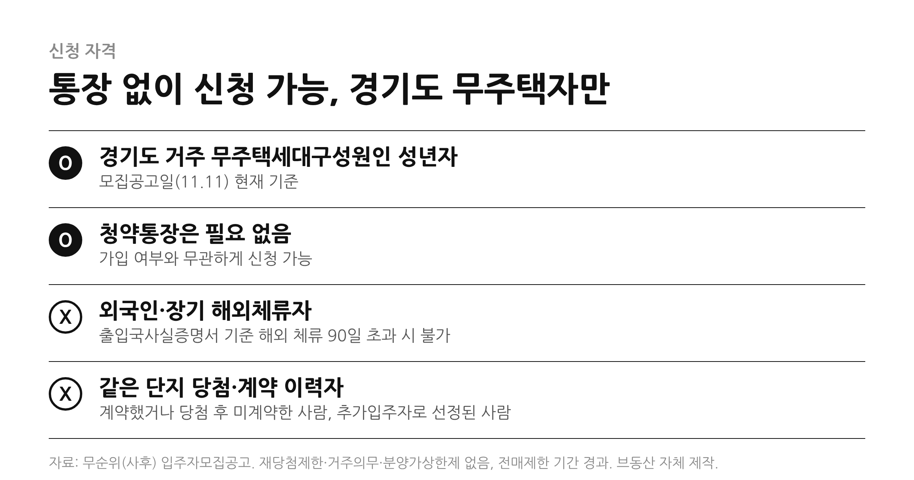

3년 전 청약했던 단지에 이번에는 딱 한 세대가 무순위로 나왔다. 안양자이 더 포레스트 59㎡, 접수는 11월 16일 하루다. 자격과 가격부터 확인하자.
1. 핵심 요약
- 01 · 공급
- 경기 안양시 만안구 석수2동 38번지 일대, 지하 3층~지상 26층 5개 동 총 483세대 중 전용 59A 104동 1104호 단 1세대다. 최초 일반분양 212세대의 잔여분이다.
- 02 · 가격
- 분양금액 6억 8,270만 원(대지비 2억 7,308만 + 건축비 4억 962만). 이미 시공된 발코니 확장 1,590만 원과 플러스 옵션 598만 원을 받아들여야 해서 합치면 7억 458만 원이다.
- 03 · 일정
- 공고 11월 11일, 접수 11월 16일(월) 09:00~17:30 청약홈, 당첨자 발표 11월 19일, 서류 접수 11월 23일, 계약 11월 26일이다.
- 04 · 자격
- 모집공고일 현재 경기도에 거주하는 무주택세대구성원인 성년자다. 청약통장은 필요 없다. 재당첨제한과 거주의무는 없고 전매제한 기간은 지났다.
- 05 · 유의
- 준공이 끝난 단지라 중도금 없이 계약금 10% 후 잔금 90%다. 당첨돼 계약하면 이후 청약에서 주택을 소유한 것으로 간주된다.
2. 이번에 나온 세대는 어떤 집인가
안양자이 더 포레스트는 GS건설이 시공한 단지로, 2026년 5월 준공이 끝났다. 공고에 따르면 이번 무순위는 최초 공급 때 1·2순위 청약이 마감된 주택형을 대상으로 예비입주자까지 소진한 뒤 남은 미계약 세대를 공급하는 것이다. 공급 물량은 59A 1세대이고 동·호는 104동 1104호로 정해져 있다. 신청자가 동·호를 고를 수는 없고 한국부동산원 프로그램이 무작위로 추첨한다.
입주시기는 공고상 2026년 11월이다. 2026년 11월 26일부터 2027년 1월 25일 사이에 잔금을 완납하면 즉시 입주할 수 있다. 유상옵션(시스템 에어컨 등)은 설치돼 있지 않고, 발코니 확장과 플러스 옵션은 이미 시공돼 있어 추가·취소가 안 된다. 이 조건을 모두 수락해야 계약할 수 있다.

3. 일정과 신청 방법
접수는 청약홈 인터넷으로만 되고 현장 접수는 없다. 공동인증서 또는 금융인증서 로그인이 필요하고, 모바일 청약은 앱에서 인증서를 미리 저장해 둬야 한다. 청약 신청은 당일 17:30까지 완료해야 하며 취소도 같은 시간까지만 가능하다. 1인 1건만 신청할 수 있고 2건 이상은 모두 무효다.
당첨자는 11월 19일 청약홈에서 확인한다. 서류는 11월 23일 분양사무소(서울 강남구 영동대로 319 자이갤러리 1층)에 접수하고, 계약은 11월 26일 10:00~16:00다. 주택형 공급세대수의 900%까지 예비입주자를 뽑는다.

4. 누가 신청할 수 있나
자격은 모집공고일(11월 11일) 현재를 기준으로 판단한다. 경기도에 거주하는 무주택세대구성원인 성년자여야 한다. 외국인은 세대원으로 인정되지 않아 신청할 수 없고, 출입국사실증명서상 해외 체류가 계속 90일을 넘으면 국내 거주로 인정되지 않는다.
같은 단지에 당첨돼 계약했거나, 당첨 후 계약하지 않았거나, 예비입주자 중 추가입주자로 선정된 사람은 신청할 수 없다. 부적격 당첨자나 공급질서교란자의 제한기간 중에 있는 사람도 안 된다. 서류 제출 단계에서 무주택 여부와 거주 이력이 검증되므로 청약 전에 본인 자격을 직접 확인해야 한다.

5. 6.827억을 어떻게 읽을까
공식 공고로 확인되는 것은 분양금액과 옵션 금액까지다. 이 가격이 시세보다 싼지 비싼지는 같은 면적의 최근 실거래와 비교해야 한다. 한 정보 사이트는 같은 단지 전용 약 60㎡의 최근 매매 실거래를 7억 1,165만 원 선(29건)으로 집계했지만, 층·향·시점이 다르고 2차 자료여서 브동산이 따로 검증한 값은 아니다. 이 글에서는 예상 프리미엄을 계산하지 않았다.
가격 외에 따져볼 점도 있다. 중도금이 없어 계약금 7,045만 원 정도로 시작하지만, 잔금 약 6억 3,412만 원을 입주지정기간 안에 내야 한다. 준공 후 단지라 소유권보존등기와 이전등기가 늦어지면 후취담보대출을 승인하는 금융기관에 한해 대출이 가능하다. 대출 한도는 정부 정책과 금융기관 기준에 따라 달라질 수 있다. 취득세와 부동산 거래신고, 6억 원 이상 주택의 자금조달계획서도 준비해야 한다. 물량이 1세대뿐이라 경쟁률이 높을 수 있다는 점도 감안하자.
6. 결론
이번 무순위는 59A 단 1세대, 접수는 11월 16일 하루다. 경기도 거주 무주택세대구성원이면 통장 없이 신청할 수 있지만 당첨돼 계약하면 이후 청약에서 주택을 소유한 것으로 본다. 분양금액 6.827억에 확장·옵션 0.2억이 붙은 7.046억이 실제 부담의 출발점이므로, 대출 가능 여부와 잔금 계획부터 확인한 뒤 신청하는 편이 안전하다.
참고한 자료
청약홈 · 안양자이 더 포레스트 무순위(사후) 입주자모집공고(2026.11.11) ↗ · 청약홈 ↗ · 청약모아 · 안양자이 더 포레스트 청약 정보(최초 공급 정보) ↗ · 엠에이치비 블로그 · 안양자이 더 포레스트 무순위 안내(2차 자료) ↗